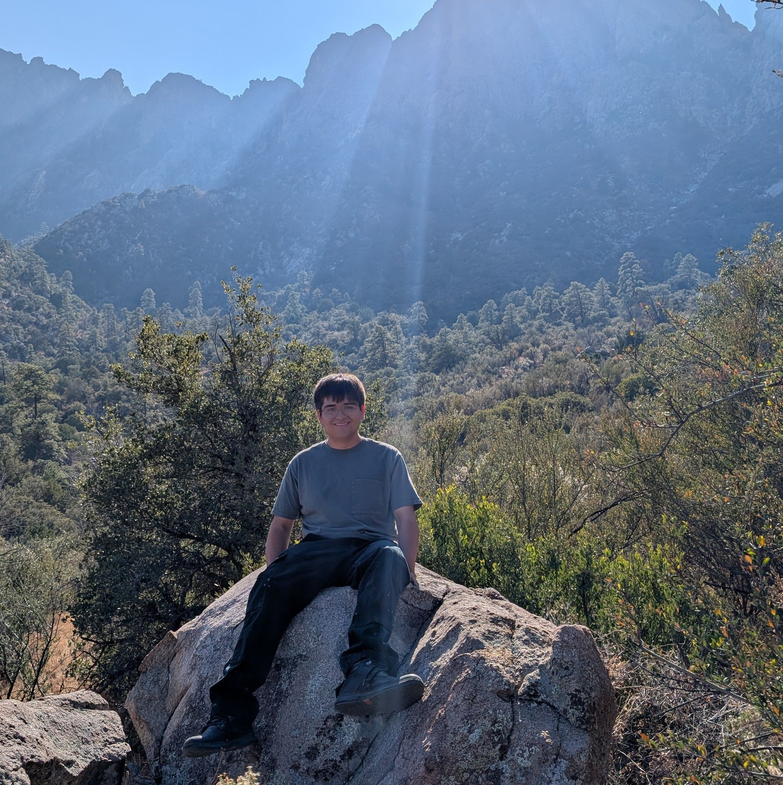
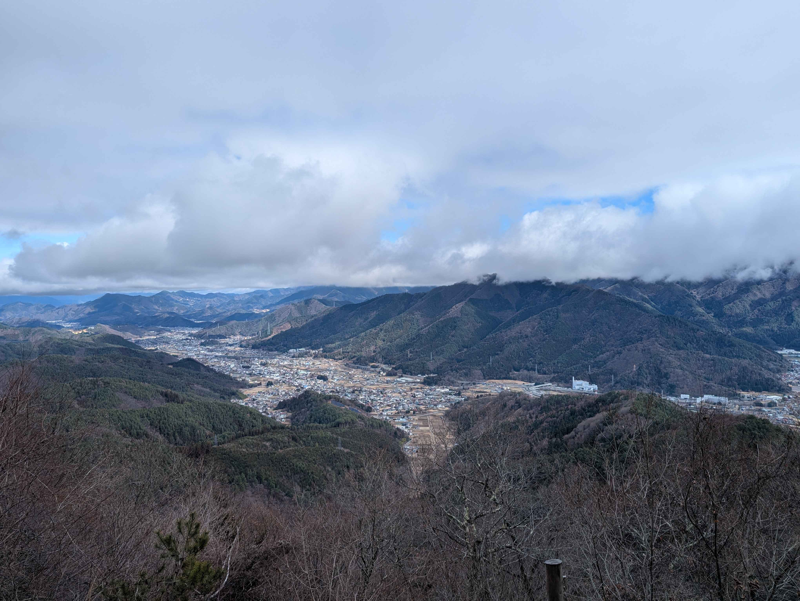
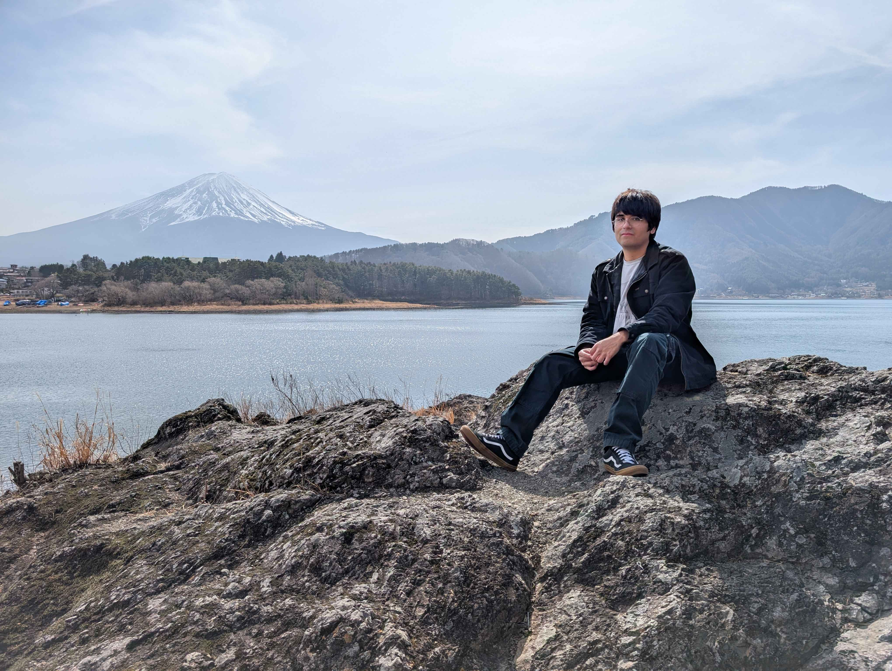

This is my blog where I will display the different hikes I have done! I have done hikes in 5 states and 4 different countries!
I will write about and describe different hikes I have done and the challenges that came with them!
My name is Anthony Lightbourn and I study Computer Information and Communication Technology at NMSU! I am in my early 20's and I love going on
hikes and go camping! I really love the outdoors and exploring different places.
I will use this page to give my thoughts on different hikes I have done and advice when it comes to doing them! I am someone who grew up not doing very much
physical activity and only started getting in shape more later in life. So my passion for hiking came more in my college years. So my perspective comes from someone who got into hiking while also
trying to get into shape!